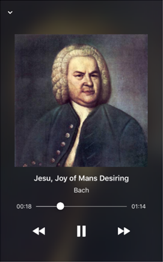
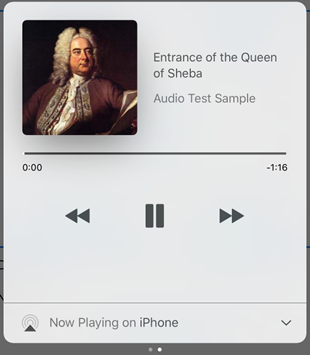

To manipulate audio in smart device applications, it is important to have a media player that allows the end user to maximize his/her experience and at the same time makes it simple for developers.
The purpose of the AudioController control is to display all the standard media buttons associated with their functionality (such as Play, Pause and Stop) as well as incorporate advanced features and flexibility for customization.
| Android |
iOS |
|
|
|
Mini player |
|
 |
Full Screen player |
The previous button has two possible states according to the progress of the song.
- Start again: If the song was playing at least for three seconds, the previous button restarts the current song at the beginning.
- Previous song: If the song does not reach the first three seconds playing, the previous button returns to the previous song.
In case that the song tops the queue, the previous button is enabled when it elapses three seconds playing.
When GeneXus detects that an AudioController has been embedded into a layout, it will automatically create a new super-class in the themes called AudioController with the following properties:
| Mini Player |
| Title Label Class |
A TextBlock sub-class to apply to the Title of the MediaItem that is being played and displayed in the mini player. |
| Subtitle Label Class |
Analogous to Title Label Class for the Subtitle. |
| Image Class |
An Image sub-class to apply to the Image of the MediaItem that is being played and displayed in the mini player. |
| Play / Pause Button Class |
A Button sub-class to apply to the Play and Pause buttons in the mini player. |
| Full Screen Player |
| Title Label Class |
Analogous to Title Label Class in the mini player for the full-screen player. |
| Subtitle Label Class |
Analogous to Subtitle Label Class in the mini player for the full-screen player. |
| Image Class |
Analogous to Image Class in the mini player for the full-screen player. |
| Play / Pause Button Class |
Analogous to Play / Pause Button Class in the mini player for the full-screen player. |
| Other Buttons Class |
A Button sub-class to apply to other buttons in the full-screen player - such as Rewind and Forward. |
Note: Not all properties for theme sub-classes are considered. The table below shows which properties are considered for each sub-class mentioned above.
| |
From... |
TextBlock
sub-class |
Image
sub-class |
Button
sub-class |
| |
Are considered... |
Forecolor
Font
Family
Size
TextDecoration
Weight, Style
Category |
Margin
Top
Bottom
Right
Left
ScaleType
Placeholder Image
Image Loading Indicator
Limitation: Only for Android |
Margin
Top
Bottom
Right
Left
Forecolor |
First, we create the associated classes for each field required in AudioController super-class.
Then, we set these classes in their corresponding fields
Finally we obtain the following result in the AudioController
| Android |
iOS |
|
|
|
Mini player |
|
|
Full Screen player |
An application with an AudioController control automatically enables a player's quick access when a queue is set. In this widget, the current song will be displayed with its information and progress state.
Android
(from the toolbar) |
iOS
(from the control center) |
|
 |
Warning: Do not confuse this special player managed by the OS (operative system), with the player provided by GeneXus. The AudioController control only displays the title, subtitle, and image of a media item. The mini mode adds the play/pause state button and the full mode also includes buttons such as back, forward, repeat, shuffle, etc..
- When the device is locked while it is playing a media item and audio is interrupted (e.g. by a phone call) the behavior will be:
- On iOS 10 or higher versions, the audio will be resumed automatically when It is restored.
- On iOS 9 or lower versions, the audio must be resumed manually using the play button on the player once the interruption has finished.
- In iOS, the developer must enable the audio background playback mode in order to allow the end user to use the player outside the application. This process can be done by adding the 'audio' value to the Background Modes property.
Objects: Panel for Smart Devices, Work With for Smart Devices
Platforms: SmartDevices(iOS, Android)
This API is available as from GeneXus 15.
|